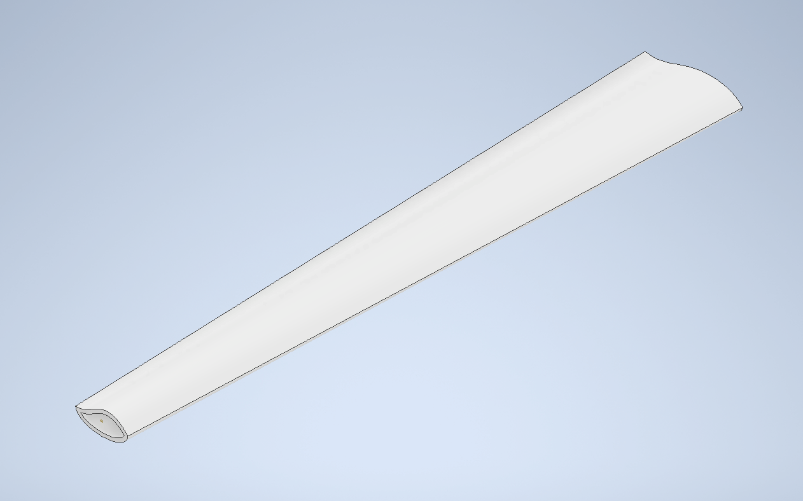
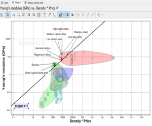
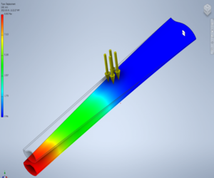

Summary
As part of an engineering design team in Project One, we focused on designing a wind turbine blade for Calgary homeowners. Our assignment, the Roof Generator scenario, required us to create a blade that would be suitable for installation on a residential roof and generate electricity for the building. To accomplish this, we conducted research on wind turbine design specifications and determined the necessary requirements for our blade. We then selected materials based on their mechanical properties and performance, and used computer-aided design (CAD) tools to model the blade's dimensions and ensure it could withstand the required design load. Through this project, we gained valuable experience with engineering computational design tools and learned how to select materials and use CAD modeling to create a functional and effective wind turbine blade.
Turbine Blade Design
Skills
During project 1, I gained a deeper understanding of engineering concepts and material selection methods. Specifically, I learned how to use MPIs (Material Property Indices) and decision matrices to determine the most suitable material for our turbine blade. I also had the opportunity to use Autodesk to run simulations and evaluate the stiffness and deflection of the blade. In addition to technical skills, this project allowed me to develop my teamwork skills and understand the importance of good design. Overall, I feel that project 1 was a valuable learning experience that has equipped me with a strong foundation in these areas.
-

Used Granta Edupack to plot our MPI and perform a material selection.
-

Used Autodesk Inventor to test the deflection of our turbine blade and alter its thickness.
Design Process
The following are documents outlining the design process throughout project 1.